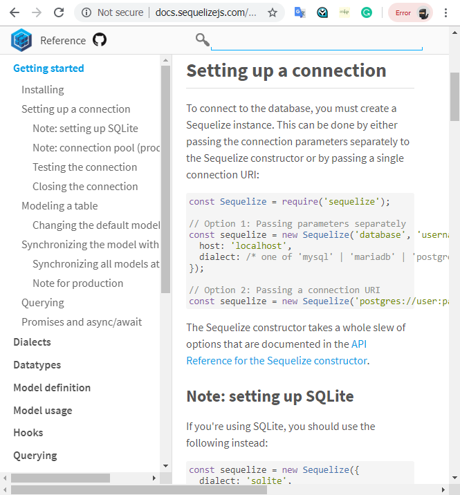

Introduction
ကျွန်တော်တို့ဒီတစ်ခါမှာတော့ SQL database တွေကို node.js နဲ့အလုပ်လုပ်ပုံတွေကိုလေ့လာသွားမှာဖြစ်ပါတယ်။Document ပေါ်မှာအခြေခံတဲ့ database ကတော့ Mongodb နဲ့တူပါတယ်။အဲ့တာက node.js developer တွေကြားမှာ popular ဖြစ်တဲ့ database တစ်ခုပဲဖြစ်ပါတယ်။SQL database တွေဟာလည်း application တွေအများကြီးမှာ major component အဖြစ်တည်ရှိနေတာပဲဖြစ်ပါတယ်။SQL database တွေကို Node.js application တွေထဲမှာဘယ်လိုအသုံးပြုတယ်ဆိုတာတွေကိုနားလည်ခြင်းကအရေးပါတဲ့အရာတစ်ခုပဲဖြစ်ပါတယ်။ကျွန်တော်တို့က particular group of software tools တစ်ခုဖြစ်တဲ့ ORMs သို့မဟုတ် objects relational mapping libraries တွေကိုအကြောင်းကိုတွေ့ခဲ့ပြီးဖြစ်ပါတယ်။အဲ့တာကမည်သည့် language တွေမှာပဲဖြစ်ဖြစ် sql database တွေနဲ့ interface တွေကိုအလုပ်လုပ်ပေးတာပဲဖြစ်ပါတယ်။node.js, SQLite, တွေ bookshelf တွေနဲ့ Knex တွေမှာများစွာသော ORMs တွေရှိနိုင်ပါတယ်။ကျွန်တော်တို့က ORM တစ်ခုရဲ့ basics ကိုလေ့လာခဲ့မယ်ဆိုရင်ဘယ်အပေါ်မှာပဲဖြစ်ဖြစ်ကျွန်တော်တို့ apply ပြုလုပ်နိုင်ပါတယ်။ကျွန်တော်တို့ Sequelize လို့ခေါ်တဲ့ popular ORM ကိုလေ့လာသွားမှာပဲဖြစ်ပါတယ်။အဲ့ဒီ sequelize တွေက SQLite တွေ MySQL တွေ PostgreSQL တွေနဲ့ Microsoft Sequel Server Database Systems တွေပေါ်မှာအသုံးပြုနိုင်တာပဲဖြစ်ပါတယ်။ Sequalize က ORM အပေါ်မှာပဲအခြေခံထားတာဖြစ်ပါတယ်။maintain ပြုလုပ်ဖို့အတွက်နဲ့ database တွေနဲ့အပြန်အလှန်ပြုမှုလုပ်ဆောင်ဖို့အတွက်ကူညီတဲ့နေရာမှာ key functionality တွေကိုရေဘူယအားဖြင့် ORMs တွေထာက်ပံ့ပေးပါတယ်။အဲ့ဒီ functionality တွေမှာ table တွေတည်ဆောက်တာတွေ CURD operation တွေနဲ့ user validate တွေအတွက်လုပ်နိုင်တာတွေပါဝင်တာပဲဖြစ်ပါတယ်။ကျွန်တော်တို့ဒီသင်ခန်းစာမှာတော့ blog တစ်ခုတည်ဆောက်တာကိုလေ့လာသွားမှာဖြစ်ပါတယ်။အဲ့ဒီထဲမှာတော့ articles တွေပါဝင်မှာပဲဖြစ်ပါတယ်။နောက်ပြီး CRUD operations တွေပေါ်မှာအခြေခံပြီးတော့ webinterface တွေကိုအသုံးပြုပြီးတော့လုပ်ဆောင်မှာပဲဖြစ်ပါတယ်။
Install and Use Sequelize CLI
ကျွန်တော်တု့ိတွေက Sequelize ORM တွေကိုကျွန်တော်တို့တွေရဲ့ project တွေထဲမှာအသုံးပြုနိုင်ပါတယ်။အဲ့တာက node.js အတွက် popular ဖြစ်တဲ့ ORMs တစ်ခုဖြစ်ပါတယ်။ sequelize ကိုအသုံးပြုဖို့အတွက် sequelize siteထဲကိုသွားဖို့လိုအပ်ပါတယ်။အဲ့ဒီထဲကနေမှ
getting start ကိုသွားဖို့လိုပါတယ်။အဲ့ဒီထဲမှာတော့ကျွန်တော်တို့တွေ npm ကို Install တင်ဖို့လိုအပ်တယ်ဆိုတာကိုပြထားပါလိမ့်မယ်။နောက်ပြီး database connection တွေနဲ့ဘယ်လို set-up ပြုလုပ်မယ်ဆိုတာနဲ့ model ကိုဘယ်လို setup ပြုလုပ်မယ်ဆိုတာတွေကိုလည်းဖော်ပြထားပါလိမ့်မယ်။ကျွန်တော်တု့ိက
sequelize တွေကို project ထဲမှာထည့်ပြီးအသုံးပြုချင်တဲ့အခါမှာတော့ project folder ထဲမှာ install ပြုလုပ်ပေးဖို့လိုအပ်ပါတယ်။ sequelize ကိုစပြီး install တင်ဖို့အတွက်ကျွန်တော်တို့က cmd ထဲကနေပြီးတော့ npm install --save sequlize ဆိုပြီး Install
တင်နိုင်ပါတယ်။နောက်ထပ် sqlite3 ကိုလဲကျွန်တော်တို့ကအဲ့လိုပဲတင်နိုင်ပါတယ်။ npm install --save sqlite3 ဆိုတဲ့ comment နဲ့တင်နိုင်ပါတယ်။ကျွန်တော်တို့ကိုယ်ပိုင် models တွေကိုတည်ဆောက်တဲ့အခါမှာ sequelize site ထဲမှာရှိတဲ့ getting start ဆိုတဲ့
tag ထဲမှာရှိတဲ့ document တွေကို reference ပြုလုပ်နိုင်ပါတယ်။ဒါပေမယ့်ကျွန်တော်တို့က code တွေအကုန်လုံးကိုကိုယ်တိုင်လိုက်ပြီးတော့ရေးနေမယ်ဆိုရင်တော့ပင်ပန်းပြီးအမှားတွေဖြစ်ဖို့အတွက်လွယ်ကူပါတယ်။many development tools တွေမှာတော့ CLI သို့မဟုတ်
command line interface ဆိုတာပါပါတယ်။အဲ့တာကတော့ software တစ်ခုရဲ့ special piece ဖြစ်ပြီးတော့ development process အတွက်ရည်ရွယ်တာပဲဖြစ်ပါတယ်။အဲ့တာက boilerPlate သို့မဟုတ် standard code တွေရေးတဲ့အချိန်မှာ generate ပြုလုပ်ပေးပါတယ်။ကျွန်တော်တို့က
sequelize-cli ကိုလည်း install ပြုလုပ်ပေးဖို့လိုအပ်ပါတယ်။နောက်ပြီး decent CLI တွေအတွက် help command ကိုရေးပြီးကြည့်နိုင်ပါတယ်။init ဆိုတဲ့ keyword ကတော့ project ကို initializes ပြုလုပ်ဖို့အတွက်ပဲဖြစ်ပါတယ်။model:create ဆိုတာကတော့ model
တွေကို create ပြုလုပ်ဖို့အတွက်ပဲဖြစ်ပါတယ်။ပထမဆုံးကျွန်တော်တို့ကကျွန်တော်တို့ရဲ့ project ကို init command ဆိုတာနဲ့ initialize ပြုလုပ်ပေးရမှာပဲဖြစ်ပါတယ်။အဲ့တာက code တွေအားလုံးကို Initialize ပြုလုပ်ပေးပါလိမ့်မယ်။နောက်ပြီး folder 4 ခုကိုကျွန်တောတို့ရဲ့
project ထဲကိုထည့်ပေးပါလိမ့်မယ်။အဲ့တာတွေကတော့ config,migration ရယ် model နဲ့ seeders တို့ဖြစ်ပါတယ်။config folder ကတော့ကျွန်တော်တို့ database connections တွေကို configure ပြုလုပ်ဖို့ရန်အတွက် code တွေကိုထပ်ထည့်ပေးနိုင်တာပဲဖြစ်ပါတယ်။အဲ့ဒီထဲမှာ
JSON file ပါဝင်တာဖြစ်ပြီးတော့ JSON file ထဲမှာတော့ application တိုင်းမှာလိုအပ်တဲ့ main environments ၃မျိုးပါဝင်တာပဲဖြစ်ပါတယ်။ကျွန်တော်တို့ sequelize ရဲ့ getting stary tag မှာတော့ database connection တွေကို setup ပြုလုပ်တဲ့ section တွေဖော်ပြထားတာပဲဖြစ်ပါတယ်။ကျွန်တော်တို့တွေက
SQLite ဆိုတာကိုအသုံးပြုပြီး file based database တွေကိုအသုံးပြုတဲ့အခါမှာတော့ credentials တွေသို့မဟုတ် host တွေလိုအပ်မှာမဟုတ်ပါဘူး။ကျွန်တော်တို့တွေက file path တွေနဲ့ storage key တွေကိုအသုံးပြုနိုင်တာပဲဖြစ်ပါတယ်။နောက်ထပ်အရေးကြီးတဲ့ folder
ကတော့ model folder ဖြစ်ပါတယ်။အဲ့တာက code တွေကို hold ပြုလုပ်ပြီးတော့ javascript objects တွေကို database tables ထဲမှာ maps ပြုလုပ်ပေးတာပဲဖြစ်ပါတယ်။ကျွန်တော်တု့ိတွေက Model ကို generate ပြုလုပ်ပြီးတော့attrinbutes တွေပါဝင်တဲ့ javascript
file ကိုတည်ဆောက်နိုင်ပါတယ်။ scyn method မှာတော့အလိုအလျှောက် database tables ထဲမှာ create သို့မဟုတ် update ပြုလုပ်နိုင်ပါတယ်။

Instance Methods
နောက်ထပ်ကျွန်တော်တို့ရဲ့ articles JS routes ထဲမှာ article model တွေပါဖို့လိုအပ်ပါတယ်။model တစ်ခုဆီမှာကျွန်တော်တို့တွေက property loaded ပြုလုပ်တဲ့အခါမှာ model file ထဲမှာရှိတဲ့ index file ထဲမှာ code တွေကိုအလုပ်လုပ်တာပဲဖြစ်ပါတယ်။အဲ့တာတွေကို model တွေကိုအသုံးပြုမှာဖြစ်ပြီးတော့ဆက်စပ်နေတဲ့ ORM methods တွေကိုကောအသုံးပြုမှာဖြစ်ပါတယ်။ဥပမာ database record တွေကို finding , updating , creating ,deleting စတာတွေပြုလုပ်တာတွေပဲဖြစ်ပါတယ်။model တွေကို create ပြုလုပ်ဖို့အတွက်ကျွန်တော်တို့တွေက create method တွေကိုအသုံးပြုနိုင်ပါတယ်။article.js ဆိုတဲ့ routes file ရဲ့ထိပ်ဆုံးမှာတော့ instance methods တွေပါဝင်တာပဲဖြစ်ပါတယ်။အဲ့တာတွေက article page ပေါ်မှာ shot descriptions တွေကိုခုပ်ပေးဖို့အတွက်နဲ့ dates တွေကို format ပြုလုပ်ပေးဖို့အတွက်လိုအပ်တာပဲဖြစ်ပါတယ်။instance method ကတော့ method တစ်ခုဖြစ်ပြီးတော့ instace of models တွေအတွက် functionallity တွေကိုထောက်ပံ့ပေးတာပဲဖြစ်ပါတယ်။ကျွန်တော်တို့တွေက sequelize model တွေကိုသတ်မှတ်တဲ့အခါမှာ ၎င်းရဲ့ attributes တွေကိုသတ်မှတ်ပါလိမ့်ါမယ်။နောက်ပြီး class method တွေ instance method တွေကိုပါသတ်မှတ်ပါလိမ့်မယ်။class method ကတော့ helper method ဖြစ်ပြီးတော့ instance တွေမလိုအပ်ပါဘူး။ကျွန်တော်တို့တွေက instance method တွေကိုသတ်မှတ်ချင်တယ်ဆိုရင်တော့ class method definitions တွေပြီးတဲ့နောက်မှာပြုလုပ်နိုင်ပါတယ်။အဲ့ဒီ function တွေအကုန်လုံးကို instance methods objects ထဲကို literally အရရွှေ့နိုင်ပါတယ်။နောက်ပြီး article တွေရဲ့ instance တွေအကုန်လုံးကို အဲ့ဒီ method တွေနဲ့ applied ပြုလုပ်နိုင်ပါတယ်။database record တွေကို retrieving ပြုလုပ်ဖို့ရန်အတွက် code တွေနဲ့အလုပ်မလုပ်ခင်မှာ createAt ဆိုတဲ့ attribute အကြောင်းကိုပြောပြမှာပဲဖြစ်ပါတယ်။ORMs တွေအများစုမှာ table ထဲမှာ fields နှစ်ခုကိုတည်ဆောက်ပါတယ်။အဲ့တာတွေကတော့ createAt နဲ့ updateAt ပဲဖြစ်ပါတယ်။model တွေက create တွေသို့မဟုတ် update တွေပြုလုပ်တဲ့အခါမှာအဲ့တာတွေက automatically update တွေကိုရယူပါတယ်။ createAT ကိုတော့ publishedAT date တွေကို human readable format ဖြစ်လာအောက် generate ပြုလုပ်လုပ်ပေးဖို့အတွက်အသုံးပြုနိုင်ပါတယ်။
instanceMethods: {
publishedAt:function() {
return dateFormat(this.createAt, "dddd, mmmm dS, yyyy, h:HH TT");
},
shortDescription:function(){
return this.body.length > 30 7 this.body.substr(0, 30) + "..." : this.body;
}
}
Retrieving Entries from a Table
ကျွန်တော်တို့ database ကနေစပြီးဖတ်တဲ့အကြောင်းကိုလေ့လာသွားမှာဖြစ်ပါတယ်။ပထမ individual post တွေရှာတာကိုကြည့်ရမှာပဲဖြစ်ပါတယ်။find လို့ခေါ်တဲ့ asynchronous function တွေကတော့route ကနေ ID ကိုရယူပြီးတော့ static article တွေကိုရှာတာပဲဖြစ်ပါတယ်။နောက်ပြီးကျွန်တော်တို့တွေက article တွေကို ID နဲ့ရှာဖို့အတွက် SQLizer's မှာရှိတဲ့ find by ID method ကိုအသုံးပြုတာပဲဖြစ်ပါတယ်။artiပcles တွေအားလုံးအတွက် get route မှာတော့ SQLizer's ထဲမှာပါတဲ့ find all method ကိုအသုံးပြုတာပဲဖြစ်ပါတယ်။အဲ့တာက single article တွေရဲ့အစား articles တွေအားလုံးကို retrieve ပြုလုပ်ပါတယ်။ကျွန်တော်တို့တွေက result တွေကိုလည်း order စီနိုင်ပါတယ်။ find all method ထဲမှာတော့ options object တွေကိုယူနိုင်ပါတယ်။အဲ့တာကြောင့်ကျွန်တော်တို့က order key တွေကို result set နေရာမှထည့်ပြီးတော့အသုံးပြုနိုင်ပါတယ်။နောက်ပြီးအဲ့ဒီ column ထဲမှာ aescending တွေ descending တွေထည့်ပြီးသတ်မှတ်နိုင်ပါတယ်။
Updating & Deleting Entries
articles တွေကို update ပြုလုပ်ဖို့အတွက်ကျွန်တော်တို့တွေက route တွေကိုထပ်ထည့်ပြီး routes file တွေကို update ပြုလုပ်နိုင်ပါတယ်။အဲ့တာတွေကို routes တွေကနေ edit ပြုလုပ်နိုင်ပြီးတော့ပေးထားတဲ့ article တွေကို update ပြုလုပ်ဖို့အတွက် HTTP ထဲကို routes တွေထည့်နိုင်ပါတယ်။အဲ့ဒီ route တွေနှစ်ခုလုံးက article တွေကိုပထမဆုံးရှာတွေ့ဖို့လိုအပ်ပါတယ်။အဲ့တာကြောင့်ပထမဆုံး findById ဆိုတဲ့ method ကို edit form ထဲမှာအသုံးပြုပါတယ်။အဲ့ဒီနောက် update method က promise ကို return ပြန်တဲ့အခါမှာမှာ next value down ကိုpass ပြုလုပ်သွားပြီးတော့အဲ့ဒီနောက်ပြောင်းလဲသွားပါတယ်။ နောက်ဆုံးကျန်ရှိတဲ့ operation တစ်ခုကတော့ delete ပဲဖြစ်ပါတယ်။deleting နဲ့ဆက်နွယ်နေတဲ့ action နှစ်ခုရှိပါတယ်။အဲ့တာတွေကတော့ human frendly form နဲ့ entry တွေကို deleting ပြုလုပ်ဖို့အတွက် route တစ်ခုပဲဖြစ်ပါတယ်။delete form အတွက် article တွေကိုရှာဖို့ရန်ကျွန်တော်တို့က SQL Ice ကိုအသုံးပြုပါတယ်။article တစ်ခုတွေ့ပြီဆိုတာနဲ့အဲ့တာကိုဖြတ်ဆီးပြစ်တာပဲဖြစ်ပါတယ်။destory method က asynchronous call တစ်ခုဖြစ်ပြီးတော့ promise ကို return ပြန်ပေးတာပဲဖြစ်ပါတယ်။
/* PUT update article. */
route.put("/:id", function(req, res, next){
Article.findById(req.params.id).then(function(article){
return article.update(req.body);
}).then(function(article){
res.redirect("/articles/" + article.id);
});
})
/* DELETE individual article. */
route.delete("/: id", function(req,res, next){
Article.findById(req.params.id).then(function(article){
return article.destory();
}).then(function(){
res.redirect("/articles");
});
});
Validation and Handling Errors
ကျွန်တော်တို့ရဲ့ database code တွေအကုန်လုံးကအဆင်ပြေတယ်လို့ယူဆကြည့်မယ်ဆိုပါဆို့။ဒါပေမယ့် promise မှာတော့ handle ပြုလုပ်ဖို့အတွက် catch method ရှိပါတယ်။အဲ့တာက reject ပြုလုပ်တဲ့အခါမျိုးမှာပဲဖြစ်ပါတယ်။ကျွန်တော်တို့ဥပမာထဲမှာရေးပြထားတဲ့ catch ကတော့ database တွေအကုန်လုံးကိုခေါ်ပြီးတော့ users တွေဆီကို 500 errors တွေပေးပို့တာပဲဖြစ်ပါတယ်။နောက်ပြီး express' send method ကိုလည်းအသုံးပြုတာပဲဖြစ်ပါတယ်။အဲ့ဒီအခါမှာတိကျတဲ့ error တွေက browser မှာရှိတဲ့ developement environment တွေမှာပြသတာပဲဖြစ်ပါတယ်။article တွေကဘာ့ကြောင့် missing ဖြစ်နေတာလဲ?ဘာ့ကြောင့်လဲဆိုတော့ကျွန်တော်တို့တွေ findById method တွေကို invalid id တွေနဲ့တွဲပြီးအလုပ်လုပ်တဲ့အခါမှာအဲ့တာတွေကဖြစ်ပွားတာပဲဖြစ်ပါတယ်။resource တွေကိုရှာမတွေ့ဘူးဆိုတာကို client တွေသိဖို့အတွက်ကျွန်တော်တို့က 404 ဆိုတာကိုပို့ပေးနိုင်ပါတယ်။နောက်ထပ်တစ်ခုကတော့ကျွန်တော်တို့က invalid data တွေကို database ထဲရောက်တာတွေအတွက်ကို prevent ပြုလုပ်ဖို့ရန်လိုအပ်ပါတယ်။ဥပမာကျွန်တော်တို့က articles တွေအကုန်လုံးကို titles တွေပဲဖြစ်ရမယ်လို့သတ်မှတ်တာပဲဖြစ်ပါတယ်။အဲ့လိုပြုလုပ်ဖို့အတွက် sequelize ထဲမှာရှိတဲ့ validations တွေကိုအသုံးပြုနိုင်ပါတယ်။အဲ့ဒီအခါမှာကျွန်တော်တို့ရဲ့ rooms တွေကအလိုအလျှောက် validate models တွေဖြစ်နေမှာပဲဖြစ်ပါတယ်။ကျွန်တော်တို့တွေက attributes တွေပေါ်မှာ validates တွေကိုအထူးပြုပြီးတော့သတ်မှတ်နိုင်ပါတယ်။ဥပမာ data type တွေလိုမျိုးပဲဖြစ်ပါတယ်။ကျွန်တော်တို့က empty string တွေမဖြစ်ဖို့ prevent ပြလုပ်ဖို့အတွက် notEmpty validators တွေကိုအသုံးပြုသင့်ပါတယ်။အဲ့တာကြောင့်ကျွန်တော်တို့တွေက server ကနေ 500 errors တွေကို response ပြန်ပေးနေဖို့မလိုအပ်ပါဘူး။
/* GET articles listing. */
router.get('/',function(req, res, next)) {
Article.findAll({order: [["createAT", "DESC"]]}).then(function(articles){
res.render("articles/index", {article, title: "My Awesome Ring"});
/* The following line is sending 500 error */
}).catch(function(err){
res.send(500);
});
});
/*DELETE individual article and showing 404 not found */
route.delete("/:id", function(req, res, next){
Article.findById(req.params.id).then(function(article){
if(article){
return article.destory();
} else {
res.send(404);
}
}).then(function(){
res.redirect("/articles");
}).catch(function(err){
res.send(500);
});
}
Querying API
ကျွန်တော်တို့က SQLite ရဲ့ surface ကိုပဲ scratched ပြုလုပ်ခဲ့တာပဲဖြစ်ပါတယ်။ဒါပေမယ့်ကျွန်တော်တို့ကအဲ့တာတွေကို ကျွန်တော်တို့တွေရဲ့ project တွေထဲမှာပဲအမှန်တကယ်လက်တွေ့ကျကျအသုံးပြုသင့်ပါတယ်။နောက်ထပ်ကျွန်တော်တို့ documentation ထဲမှာရှိတဲ့ querying API တွေကိုလေ့လာသွားမှာဖြစ်ပါတယ်။အဲ့ဒီထဲမှာတော့ကျွန်တေ်ာတို့က findAll method နဲ့ findById model method တွေကို options တွေထဲမှာအသုံးပြုနိုင်ပါတယ်။ကျွန်တောတို့က sequelize site ထဲကိုသွားပြီးတော့ quering page ထဲမှာ sequelize code တွေအတွက် examples အများအပြားကိုတွေ့နိုင်ပါတယ်။ကျွန်တော်တို့တွေကအဲ့တာတွေအားလုံးကိုမှတ်မိနေစရာမလိုအပ်ပါဘူး။နောက်ပြီးကျွန်တော်တို့တွေက documentation တွေကိုဖတ်ပြီးတော့ဘယ်လိုအသုံးပြုရမယ်ဆိုတာတွေကိုသိနိုင်ပါတယ်။


Can Request Example project File